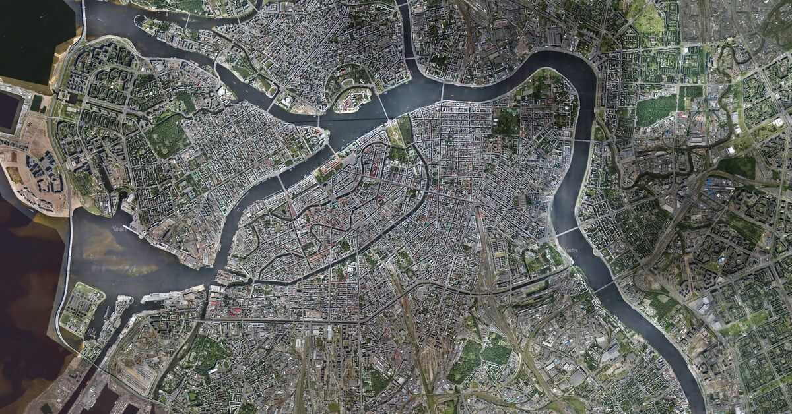
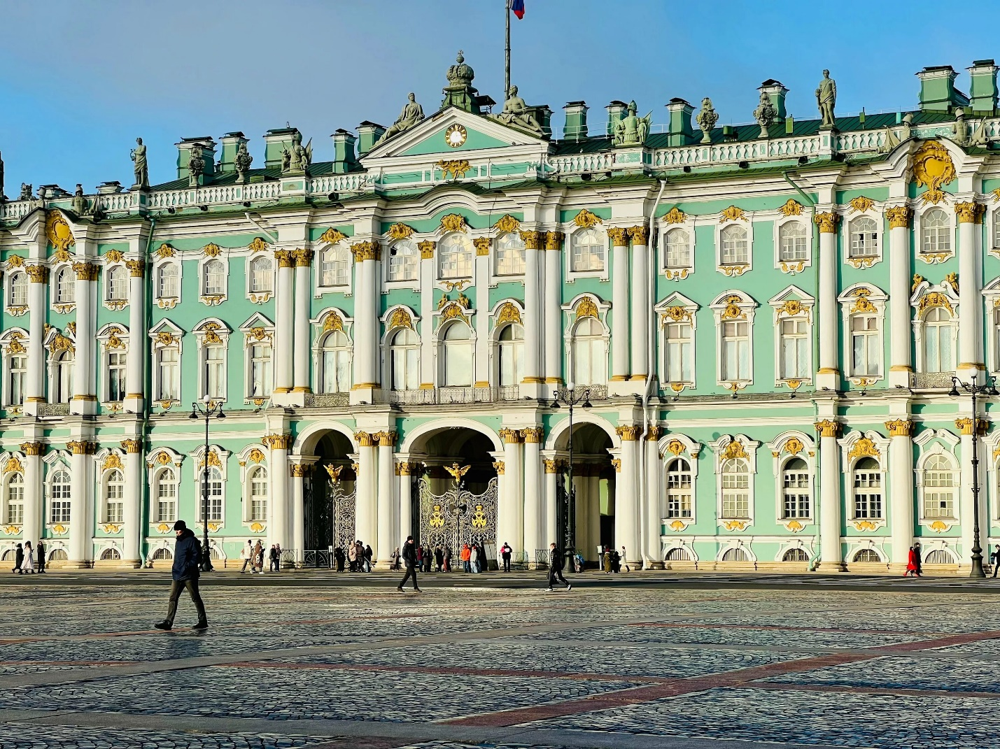
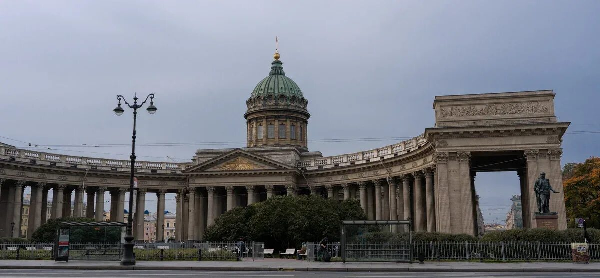
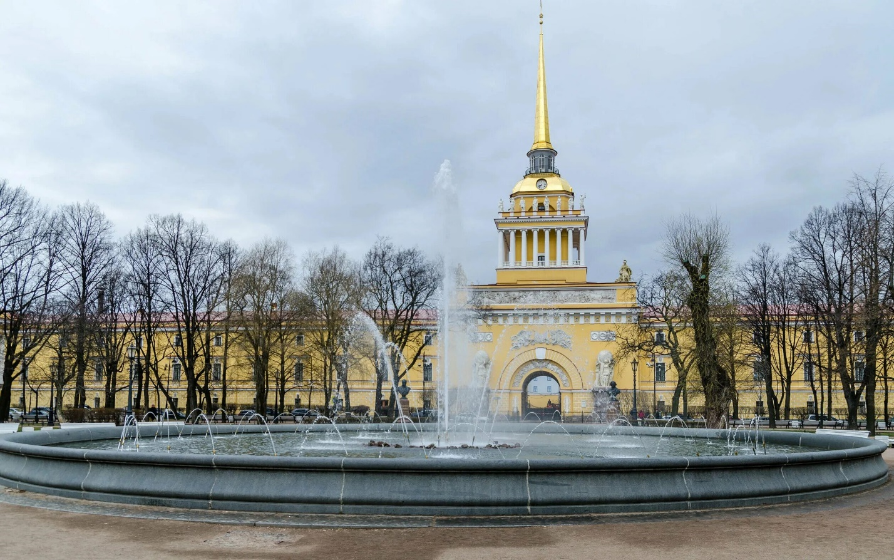
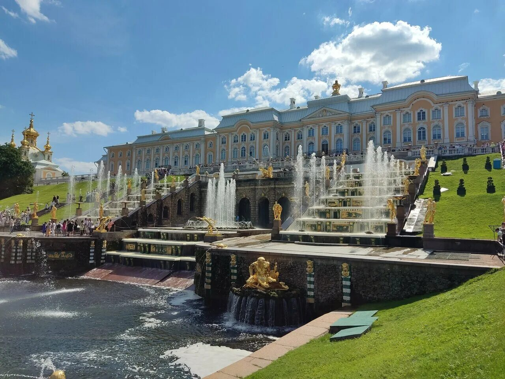
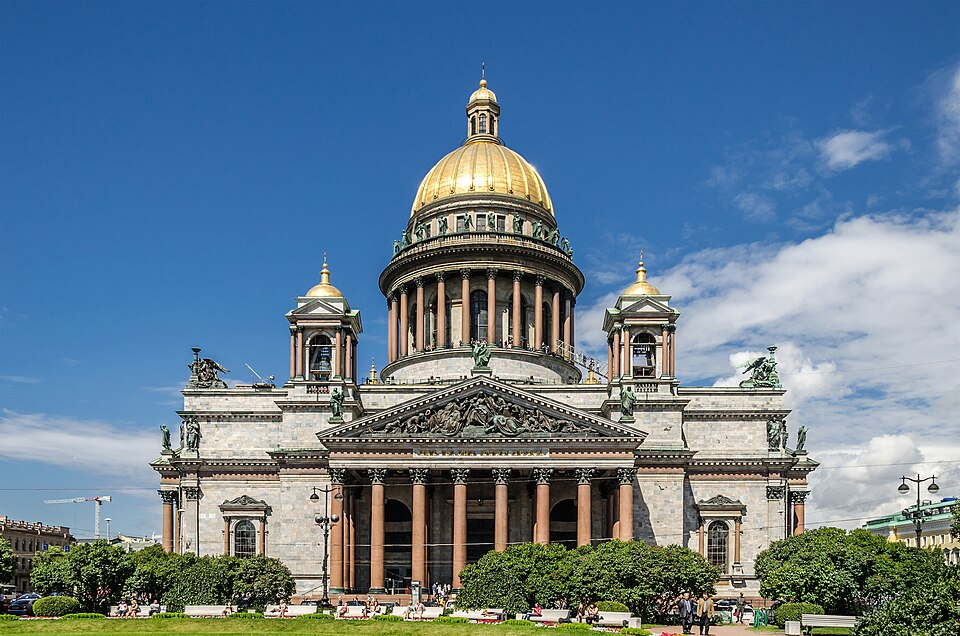
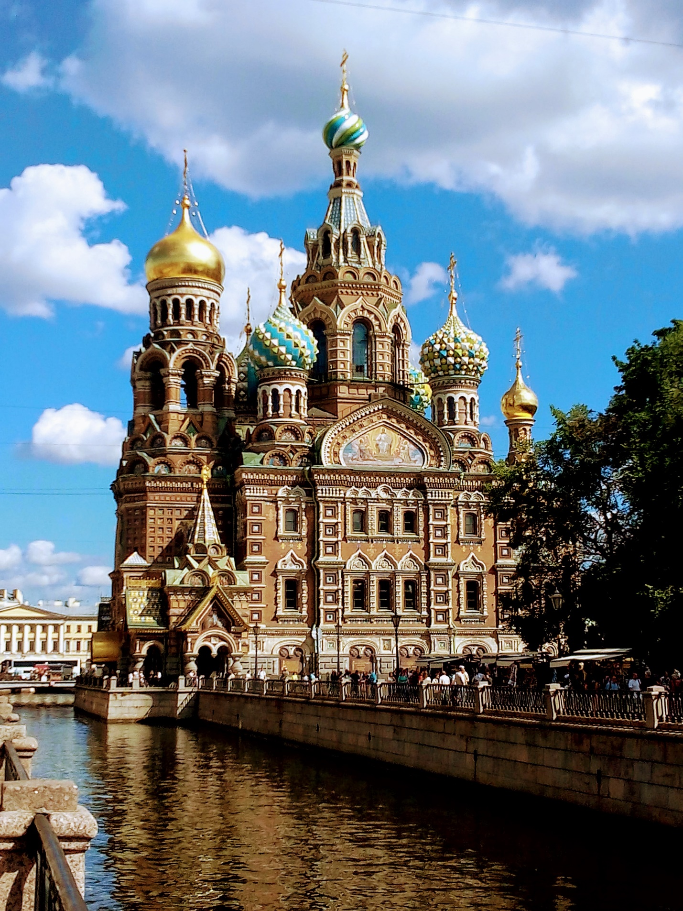

Путеводитель для Санкт-Петербурга
Официальный сайт города
Информационный портал Центра петербурговедения библиотеки им. В. В. Маяковского. На сайте представлены краеведческие базы знаний, новые книги, анонсы событий, а также каталог ресурсов о Петербурге, подготовленных другими организациями — библиотеками, архивами, общественными союзами и фондами.
2. Ресурсы петербурговедения в библиотеках Санкт-Петербурга.
Базы данных, созданные Отделом петербурговедения ЦГПБ им. В. В. Маяковского. Среди них:
- Дайджест петербургской прессы — полнотекстовая база данных статей из местных и городских газет с материалами о Петербурге и его районах.
- «Петербург в газетных иллюстрациях» — городская хроника по страницам газеты «Петербургский листок» рубежа XIX–XX веков, проиллюстрированная репортажными рисунками.
- «Гвардия в Петербурге» («Вдоль Фонтанки-реки») — виртуальный путеводитель, подготовленный к 200-летию Отечественной войны 1812 года.
- «Районы Петербурга» (интерактивная карта) — виртуальное путешествие по историческим местностям и достопримечательностям города с текстовым и иллюстративным материалами.
Ресурс, посвящённый городским названиям. На сайте представлены база топонимов, реестр наименований улиц, мостов, садов и парков Санкт-Петербурга, госкаталог названий географических объектов и другие материалы.
Ресурс для туристов, где можно узнать о достопримечательностях, интересных маршрутах, событиях и новостях города. На портале доступны аудиогиды по популярным достопримечательностям, а также фотобанк с профессиональными снимками классических и современных туристических объектов.
На нём представлена информация об архитектурных стилях, истории зданий, их расположении на карте, городских архитекторах, а также множество фотографий города разных веков.
Эти ресурсы могут быть полезны для туристов, исследователей, студентов, а также всех, кто интересуется историей, культурой или современной жизнью Санкт-Петербурга.
Общие сведения о городе.
Санкт-Петербург — город федерального значения, административный центр Северо-Западного федерального округа России. Это второй по численности населения город страны после Москвы.
Карта города: вид со спутника.

Историческая справка.
Санкт-Петербург — город с богатой историей, основанный Петром I в 1703 году. Он стал столицей Российской империи более чем на два века и сохранил статус культурного и духовного центра страны.
16 (27) мая 1703 года на Заячьем острове в устье реки Невы Пётр I заложил крепость, которая стала основой будущего города. Название «Санкт-Питербурх» было выбрано в честь святого апостола Петра — небесного покровителя царя. Позже крепость переименовали в Петропавловскую — по названию её главного собора.
Цель основания — обеспечение водного пути из России в Западную Европу, «окно в Европу». Город задумывался как морской порт и центр интеграции России в европейскую систему.
- 1712 год — Санкт-Петербург стал столицей России, сюда переехал Сенат.
- 1712 год — Пётр I утвердил Генеральный план города, по которому центром стал Васильевский остров. Здесь построили портовые сооружения, маяки, здание Двенадцати коллегий, Кунсткамеру.
- 1725 год — в Петербурге основана Академия наук.
- При Елизавете Петровне в городе появились величественные дворцы и соборы, созданные архитектором Бартоломео Растрелли (Зимний дворец, Большой дворец в Царском Селе, Смольный собор).
- При Екатерине II город достиг расцвета: были построены Дворцовая площадь, Каменноостровский дворец, Елагинский дворец, открыт «Медный всадник» — памятник Петру I.
Переименования и значимые события.
- 1914 год — на волне антигерманских настроений в связи с началом Первой мировой войны город переименован в Петроград.
- 1924 год — после смерти В. И. Ленина по решению ЦК ВКП(б) Петроград переименован в Ленинград.
- 1941–1944 годы — блокада Ленинграда во время Великой Отечественной войны. Длилась 872 дня. За мужество и героизм город был удостоен звания «Город-герой».
- 1991 год — по результатам референдума городу возвращено историческое название — Санкт-Петербург.
Исторический центр и наследие.
В 1990 году исторический центр Санкт-Петербурга был включён в Список мировых достояний культуры ЮНЕСКО.
Сегодня Санкт-Петербург — второй по значимости экономический, научный и культурный центр России после Москвы. В городе множество памятников архитектуры, музеев, театров и других культурных учреждений.
Фотогаллерея.





Достопримечательности.
Казанский собор (Собор Казанской иконы Божией Матери) — один из крупнейших храмов Санкт-Петербурга, один из символов города. Построен в 1801–1811 годах по проекту архитектора Андрея Воронихина в стиле русского классицизма с элементами ампира.
 Петергоф — дворцово-парковый ансамбль в пригороде Санкт-Петербурга, бывшая летняя резиденция Петра I. Расположен на южном берегу Финского залива, в 29 км от Санкт-Петербурга.
Петергоф — дворцово-парковый ансамбль в пригороде Санкт-Петербурга, бывшая летняя резиденция Петра I. Расположен на южном берегу Финского залива, в 29 км от Санкт-Петербурга.

Исаакиевский собор — крупнейший православный храм Санкт-Петербурга, один из символов города. Освящён во имя преподобного Исаакия Далматского, день поминовения которого совпал с днём рождения Петра I — основателя города.

Спас на Крови (собор Воскресения Христова на Крови) — православный мемориальный храм в Санкт-Петербурге, возведённый в память о императоре Александре II. Он был построен на месте смертельного ранения Александра II 1 марта 1881 года в результате покушения. Название «на крови» указывает на пролитую кровь императора.

Гимн
Державный град, возвышайся над Невою,
Как дивный храм, ты сердцам открыт!
Сияй в веках красотой живою,
Дыханье твоё Медный всадник хранит.
Несокрушим — ты смог в года лихие
Преодолеть все бури и ветра!
С морской душой, Бессмертен, как Россия,
Плыви, фрегат, под парусом Петра!
Санкт-Петербург, оставайся вечно молод!
Грядущий день озарен тобой.
Так расцветай, наш прекрасный город!
Высокая честь — жить единой судьбой!
Ссылки на музыкальные и видеоклипы, связанные с городом: